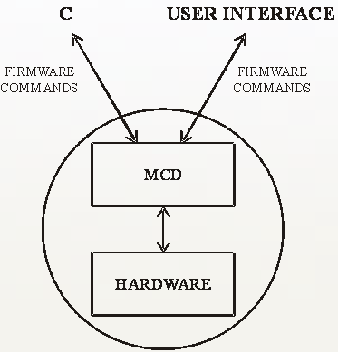

V93000 Firmware Overview
When you use the V93000 from the user interface, interaction between the software and the hardware operates transparently. The setup data and the test data that you enter in the software windows is downloaded to the hardware and you see the test results either as result values or as an error message in the report window.
What actually happens is that a series of firmware commands are converted by a Unix process into specific actions in the hardware. Similarly, data received from hardware is interpreted for the user interface by the same process. This process is called the Message Concentrator and Distributor (MCD). The figure below illustrates this interaction.

When you use the /opt/hp93000/soc/pws/bin/hpt utility to perform a function, the firmware commands are converted directly by the MCD into hardware actions. You can view this yourself by typing a command and observing the change in the appropriate setup window. You can also interrogate the hardware by sending firmware queries (commands with a question mark attached). The hpt utility replies by displaying the relevant firmware data (see the next section).
Functional changes
- Introduced before SmarTest 6.3.2